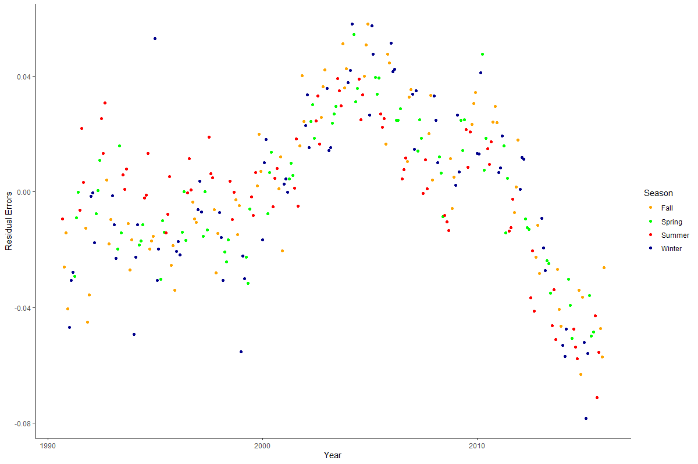
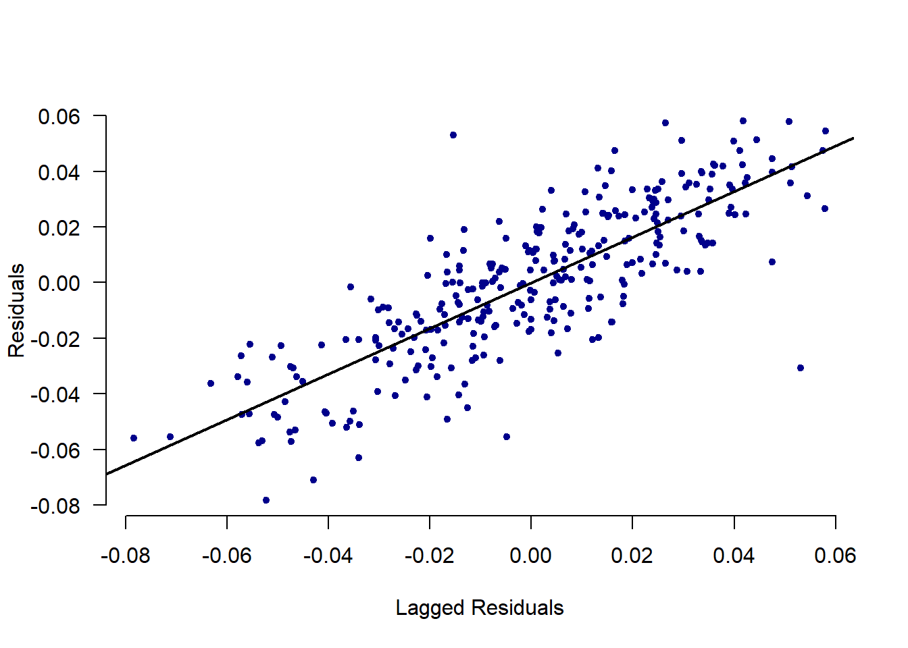
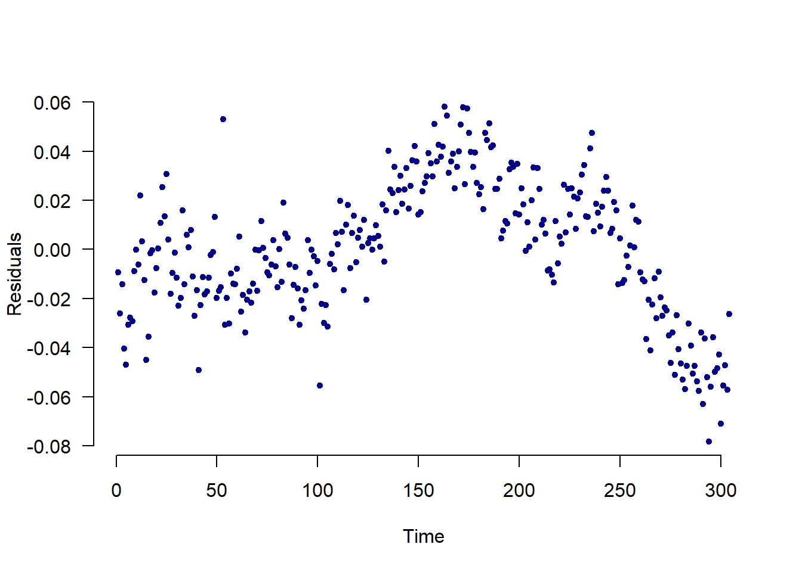
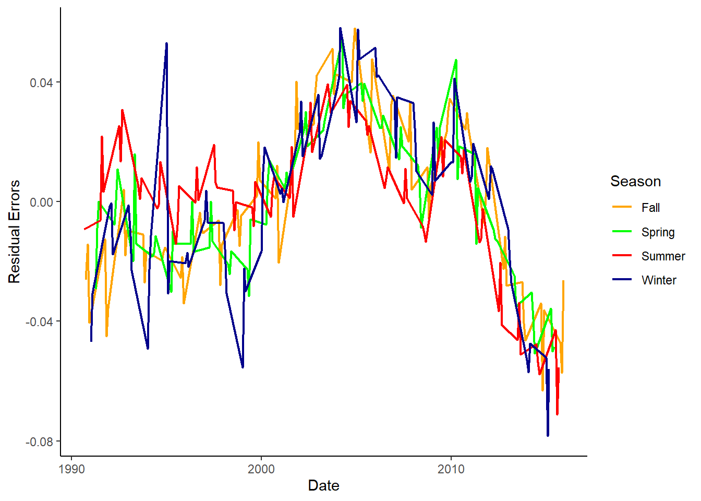
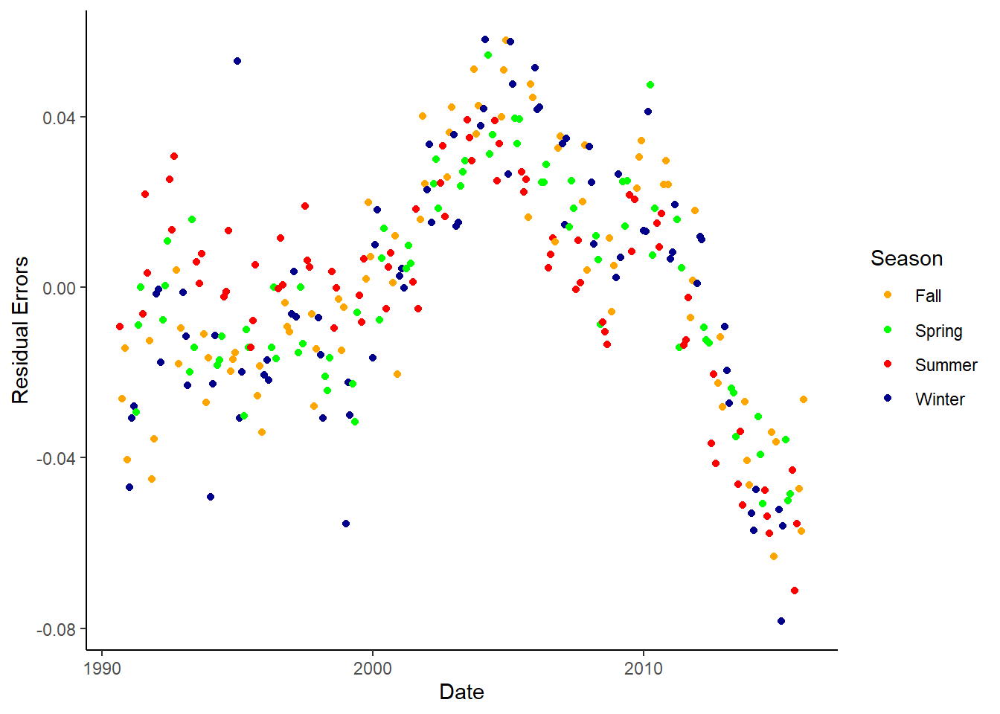
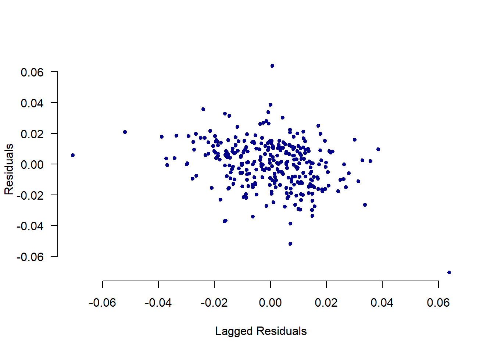
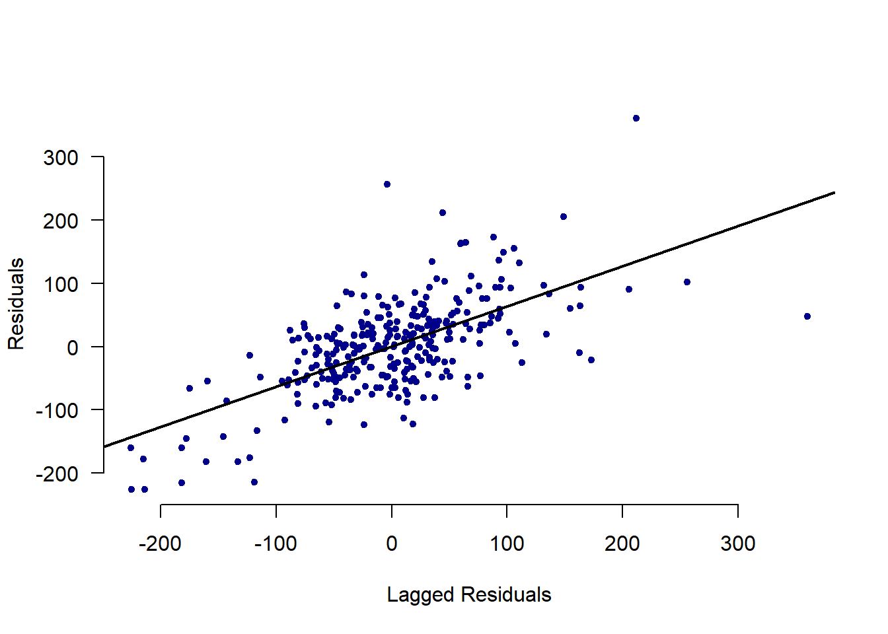
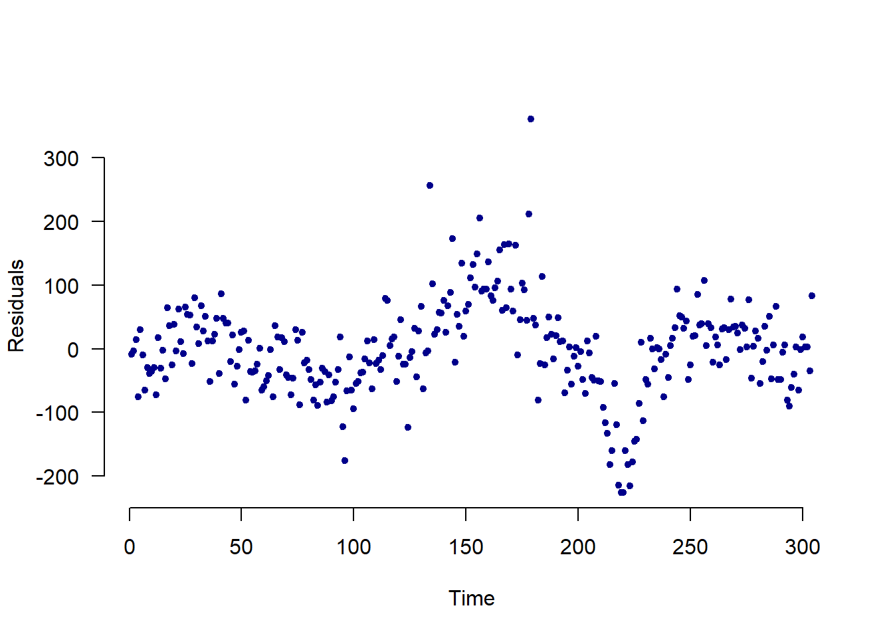
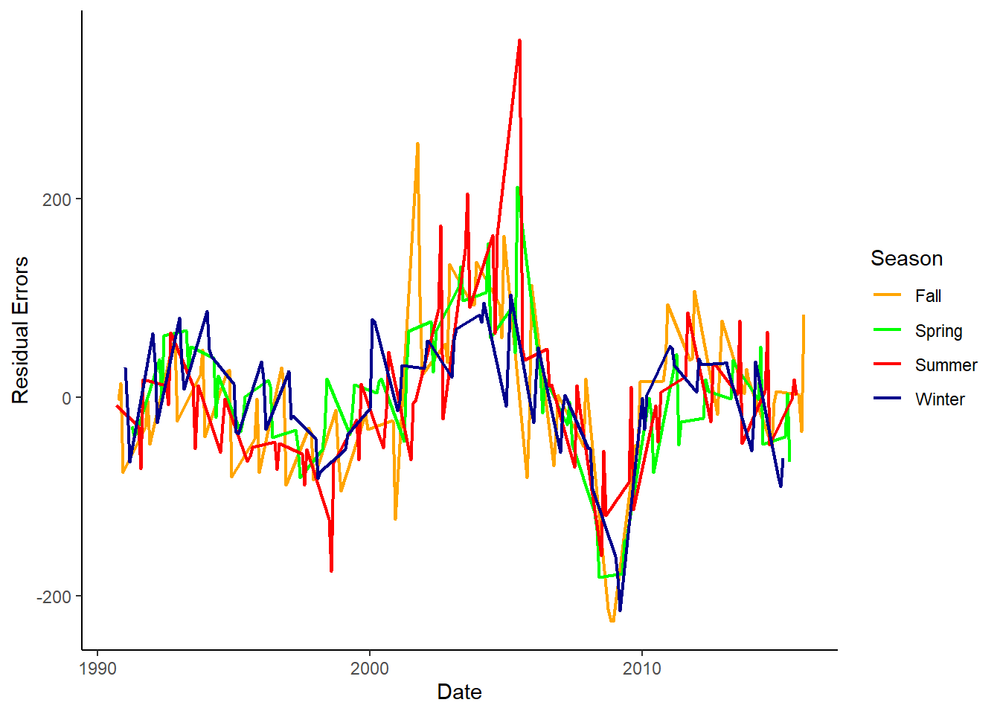
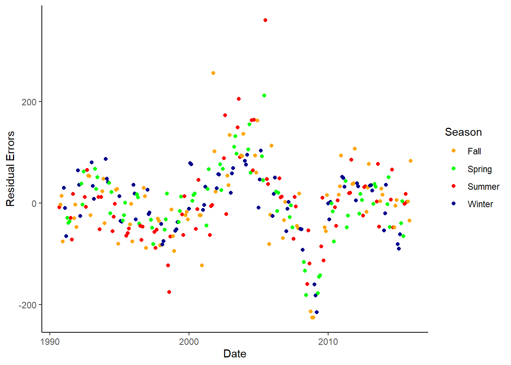

9 Lab VIII: Time Series

9.1 Preparation
## Setup Options
options(digits = 3)
## Packages
library(haven)
library(AER)
library(orcutt)
library(tidyverse)
library(lubridate)
library(lmtest)
library(sandwich)
## Loading Data
load("~/GOVT8002/Spring 2023/Lab IX/Ch13_Lab_GasPrices.RData")9.2 Data description:
| Variable | Description |
|---|---|
| year | Year |
| month | Month |
| time | Time identifier (1 for first observation, etc) |
| logMilesNA | Log of vehicle miles traveled (in millions) in the U.S., not seasonally adjusted |
| logLightTruckSales | Log of retail sales of light weight trucks in the U.S. (in thousands) |
| logGasReal | Log of real price of gas |
| unem | Unemployment rate |
| logPop | Log of U.S. population (in thousands) |
9.3 Estimate a model with the log of miles driven (use the unadjusted data: logMilesNA) as a function of log gas prices, unemployment and log of population. (Don’t account for autocorrelation.) Is the effect of gas statistically significant?
## Model 1
reg.1 <- dta %>%
lm(logMilesNA ~ logGasReal + unem + logPop, data = .)
## Summary Output
summary(reg.1)##
## Call:
## lm(formula = logMilesNA ~ logGasReal + unem + logPop, data = .)
##
## Residuals:
## Min 1Q Median 3Q Max
## -0.19523 -0.04573 0.00491 0.05196 0.13648
##
## Coefficients:
## Estimate Std. Error t value Pr(>|t|)
## (Intercept) -5.91875 1.06539 -5.56 6.1e-08 ***
## logGasReal 0.03039 0.02115 1.44 0.15
## unem -0.01979 0.00265 -7.46 9.7e-13 ***
## logPop 1.46174 0.08459 17.28 < 2e-16 ***
## ---
## Signif. codes: 0 '***' 0.001 '**' 0.01 '*' 0.05 '.' 0.1 ' ' 1
##
## Residual standard error: 0.0683 on 300 degrees of freedom
## (260 observations deleted due to missingness)
## Multiple R-squared: 0.724, Adjusted R-squared: 0.722
## F-statistic: 263 on 3 and 300 DF, p-value: <2e-16## 95% CI
confint(reg.1)## 2.5 % 97.5 %
## (Intercept) -8.0153 -3.8222
## logGasReal -0.0112 0.0720
## unem -0.0250 -0.0146
## logPop 1.2953 1.62829.4 Do you think there is seasonality in driving? Test by adding dummy variables for month to the above model. Is there evidence of monthly variation? Is the effect of gas statistically significant? Now create a categorical variable for seasons and run the model without the month dummy variable.
## Removing NAs
dta <- dta %>%
drop_na()
## Creating a variable for seasons
dta <- dta %>%
mutate(season = case_when(
month == 1 | month == 2 | month == 3 ~ "Winter",
month == 4 | month == 5 | month == 6 ~ "Spring",
month == 7 | month == 8 | month == 9 ~ "Summer",
month == 10 | month == 11 | month == 12 ~ "Fall")
)
## Model 2 Months
reg.2a <- dta %>%
lm(logMilesNA ~ logGasReal + unem + logPop + factor(month), data = .)
## Summary Output
summary(reg.2a)##
## Call:
## lm(formula = logMilesNA ~ logGasReal + unem + logPop + factor(month),
## data = .)
##
## Residuals:
## Min 1Q Median 3Q Max
## -0.07837 -0.01709 0.00095 0.01992 0.05803
##
## Coefficients:
## Estimate Std. Error t value Pr(>|t|)
## (Intercept) -8.43243 0.44362 -19.01 < 2e-16 ***
## logGasReal -0.04211 0.00896 -4.70 4.0e-06 ***
## unem -0.01414 0.00112 -12.60 < 2e-16 ***
## logPop 1.65186 0.03517 46.97 < 2e-16 ***
## factor(month)2 -0.04746 0.00791 -6.00 5.8e-09 ***
## factor(month)3 0.09982 0.00793 12.58 < 2e-16 ***
## factor(month)4 0.09338 0.00803 11.63 < 2e-16 ***
## factor(month)5 0.14264 0.00806 17.69 < 2e-16 ***
## factor(month)6 0.14402 0.00800 18.00 < 2e-16 ***
## factor(month)7 0.16943 0.00798 21.23 < 2e-16 ***
## factor(month)8 0.16520 0.00801 20.63 < 2e-16 ***
## factor(month)9 0.07426 0.00798 9.31 < 2e-16 ***
## factor(month)10 0.11323 0.00796 14.22 < 2e-16 ***
## factor(month)11 0.04218 0.00791 5.33 2.0e-07 ***
## factor(month)12 0.05098 0.00789 6.46 4.4e-10 ***
## ---
## Signif. codes: 0 '***' 0.001 '**' 0.01 '*' 0.05 '.' 0.1 ' ' 1
##
## Residual standard error: 0.0279 on 289 degrees of freedom
## Multiple R-squared: 0.956, Adjusted R-squared: 0.953
## F-statistic: 444 on 14 and 289 DF, p-value: <2e-16## 95% CI
confint(reg.2a)## 2.5 % 97.5 %
## (Intercept) -9.3056 -7.5593
## logGasReal -0.0598 -0.0245
## unem -0.0163 -0.0119
## logPop 1.5826 1.7211
## factor(month)2 -0.0630 -0.0319
## factor(month)3 0.0842 0.1154
## factor(month)4 0.0776 0.1092
## factor(month)5 0.1268 0.1585
## factor(month)6 0.1283 0.1598
## factor(month)7 0.1537 0.1851
## factor(month)8 0.1494 0.1810
## factor(month)9 0.0586 0.0900
## factor(month)10 0.0976 0.1289
## factor(month)11 0.0266 0.0578
## factor(month)12 0.0354 0.0665## Model 2 Seasons
reg.2b <- dta %>%
lm(logMilesNA ~ logGasReal + unem + logPop + factor(season), data = .)
## Summary Output
summary(reg.2b)##
## Call:
## lm(formula = logMilesNA ~ logGasReal + unem + logPop + factor(season),
## data = .)
##
## Residuals:
## Min 1Q Median 3Q Max
## -0.13922 -0.04079 0.00449 0.03595 0.14090
##
## Coefficients:
## Estimate Std. Error t value Pr(>|t|)
## (Intercept) -7.83213 0.80624 -9.71 < 2e-16 ***
## logGasReal -0.02693 0.01624 -1.66 0.098 .
## unem -0.01451 0.00203 -7.14 7.3e-12 ***
## logPop 1.60983 0.06396 25.17 < 2e-16 ***
## factor(season)Spring 0.05684 0.00834 6.82 5.1e-11 ***
## factor(season)Summer 0.06578 0.00829 7.93 4.5e-14 ***
## factor(season)Winter -0.05089 0.00842 -6.04 4.6e-09 ***
## ---
## Signif. codes: 0 '***' 0.001 '**' 0.01 '*' 0.05 '.' 0.1 ' ' 1
##
## Residual standard error: 0.051 on 297 degrees of freedom
## Multiple R-squared: 0.848, Adjusted R-squared: 0.845
## F-statistic: 275 on 6 and 297 DF, p-value: <2e-16## 95% CI
confint(reg.2b)## 2.5 % 97.5 %
## (Intercept) -9.4188 -6.24546
## logGasReal -0.0589 0.00502
## unem -0.0185 -0.01051
## logPop 1.4839 1.73571
## factor(season)Spring 0.0404 0.07324
## factor(season)Summer 0.0495 0.08211
## factor(season)Winter -0.0675 -0.034329.5 Briefly explain why there might be autocorrelation.
With 50 years of data, there are certainly time trends and we can reasonably expect the error term of one year to be correlated with the error term of the previous year. For example, if more people began longer commutes in the 1990s, the longer commutes (more miles driven) will continue into the 2000s so the errors will be correlated year by year.
9.6 Create a figure that is useful to assess whether there is autocorrelation (you have two choices here). Draw a sketch here.
## Saving the Residuals
dta$residual_errors <- resid(reg.2a)
## Regressing Residuals
lag_err <- c(NA, dta$residual_errors[1:(length(dta$residual_errors)-1)])
plot(lag_err, dta$residual_errors, pch=20, xlab = "Lagged Residuals",
ylab = "Residuals", bty="n", col="dark blue", las=1)
abline(lm(dta$residual_errors ~ lag_err), lwd=2)
## Plotting Over Time
plot(dta$residual_errors, pch=20, xlab = "Time", las=1,
ylab = "Residuals", bty="n", col="dark blue")
# Creating season category and plotting residual error
dta %>%
ggplot() +
geom_line(aes(x=as.Date(date), y=residual_errors, col=season), size=.8) +
scale_color_manual(values=c("orange", "green", "red", "darkblue"))+
labs(x="Date", y="Residual Errors") +
theme_classic() +
theme(panel.grid.major.y=element_line(color="darkgrey", linetype="dotted"), panel.grid.minor.y=element_line(color="darkgrey", linetype="dotted")) %>%
labs(col="Season")
# Creating season category and plotting residual error
dta %>%
ggplot() +
geom_point(aes(x=as.Date(date), y=residual_errors, col=season)) +
scale_color_manual(values=c("orange", "green", "red", "darkblue"))+
labs(x="Date", y="Residual Errors") +
theme_classic() +
theme(panel.grid.major.y=element_line(color="darkgrey", linetype="dotted"), panel.grid.minor.y=element_line(color="darkgrey", linetype="dotted")) %>%
labs(col="Season")
9.7 Test whether there is first order autocorrelation. Report the key statistic from this test. What would a coefficient of 1 indicate?
## Error on Lagged Error Regression
reg.lag <- lm(dta$residual_errors ~ lag_err)
summary(reg.lag)##
## Call:
## lm(formula = dta$residual_errors ~ lag_err)
##
## Residuals:
## Min 1Q Median 3Q Max
## -0.07419 -0.01022 0.00114 0.01039 0.06575
##
## Coefficients:
## Estimate Std. Error t value Pr(>|t|)
## (Intercept) -4.06e-05 8.99e-04 -0.05 0.96
## lag_err 8.21e-01 3.30e-02 24.89 <2e-16 ***
## ---
## Signif. codes: 0 '***' 0.001 '**' 0.01 '*' 0.05 '.' 0.1 ' ' 1
##
## Residual standard error: 0.0157 on 301 degrees of freedom
## (1 observation deleted due to missingness)
## Multiple R-squared: 0.673, Adjusted R-squared: 0.672
## F-statistic: 620 on 1 and 301 DF, p-value: <2e-16## Durbin-Watson
dwtest(reg.2a)##
## Durbin-Watson test
##
## data: reg.2a
## DW = 0.4, p-value <2e-16
## alternative hypothesis: true autocorrelation is greater than 09.8 Use Newey-West standard errors to account for autocorrelation. Use the same variables as in part (b). Determine the t-stats and describe the similarities and difference with earlier results.
## Calculating Newey West Standard Errors
sqrt(diag(NeweyWest(reg.2a, lag=4, prewhite=FALSE, adjust=TRUE)))## (Intercept) logGasReal unem logPop factor(month)2 factor(month)3 factor(month)4
## 1.03863 0.01780 0.00185 0.08261 0.00595 0.00699 0.00812
## factor(month)5 factor(month)6 factor(month)7 factor(month)8 factor(month)9 factor(month)10 factor(month)11
## 0.00830 0.00873 0.00872 0.00893 0.00868 0.00799 0.00764
## factor(month)12
## 0.00648## Checking t-stats
coef(reg.2a) / sqrt(diag(NeweyWest(reg.2a, lag=4, prewhite=FALSE, adjust=TRUE)))## (Intercept) logGasReal unem logPop factor(month)2 factor(month)3 factor(month)4
## -8.12 -2.37 -7.63 20.00 -7.97 14.28 11.50
## factor(month)5 factor(month)6 factor(month)7 factor(month)8 factor(month)9 factor(month)10 factor(month)11
## 17.19 16.49 19.43 18.51 8.56 14.16 5.52
## factor(month)12
## 7.879.9 Estimate a model that adjusts for autocorrelation. Use the same variables as in part (b). Describe similarities and difference with earlier results.
## Cochrane-Orcutt Model
reg.orc <- cochrane.orcutt(reg.2a)
summary(reg.orc)## Call:
## lm(formula = logMilesNA ~ logGasReal + unem + logPop + factor(month),
## data = .)
##
## Estimate Std. Error t value Pr(>|t|)
## (Intercept) -8.56609 1.16030 -7.38 1.7e-12 ***
## logGasReal -0.05457 0.01653 -3.30 0.00108 **
## unem -0.01067 0.00302 -3.53 0.00049 ***
## logPop 1.66049 0.09229 17.99 < 2e-16 ***
## factor(month)2 -0.04674 0.00333 -14.05 < 2e-16 ***
## factor(month)3 0.10185 0.00461 22.09 < 2e-16 ***
## factor(month)4 0.09775 0.00594 16.46 < 2e-16 ***
## factor(month)5 0.14735 0.00642 22.97 < 2e-16 ***
## factor(month)6 0.14733 0.00620 23.75 < 2e-16 ***
## factor(month)7 0.17257 0.00617 27.97 < 2e-16 ***
## factor(month)8 0.16921 0.00628 26.93 < 2e-16 ***
## factor(month)9 0.07941 0.00631 12.58 < 2e-16 ***
## factor(month)10 0.11843 0.00600 19.74 < 2e-16 ***
## factor(month)11 0.04669 0.00521 8.96 < 2e-16 ***
## factor(month)12 0.05494 0.00422 13.02 < 2e-16 ***
## ---
## Signif. codes: 0 '***' 0.001 '**' 0.01 '*' 0.05 '.' 0.1 ' ' 1
##
## Residual standard error: 0.0157 on 298 degrees of freedom
## Multiple R-squared: 0.937 , Adjusted R-squared: 0.936
## F-statistic: 305 on 4 and 298 DF, p-value: < 1.79e-163
##
## Durbin-Watson statistic
## (original): 0.35861 , p-value: 5.127e-46
## (transformed): 2.58848 , p-value: 1e+00## "By Hand"
reg.2a <- dta %>%
lm(logMilesNA ~ logGasReal + unem + logPop + factor(month), data = .)
## Error on Lagged Error Regression
reg.lag <- lm(dta$residual_errors ~ lag_err)
rho <- summary(reg.lag)$coef[2]
## Lagging Each Variable
dta$lagmile <- dplyr::lag(dta$logMilesNA)
dta$lag_gas <- lag(dta$logGasReal)
dta$lag_unem <- lag(dta$unem)
dta$lag_pop <- lag(dta$logPop)
dta$lag_month <- lag(dta$month)
## Rho-transforming
rho_mile <- dta$logMilesNA - rho*dta$lagmile
rho_gas <- dta$logGasReal - rho*dta$lag_gas
rho_unem <- dta$unem - rho*dta$lag_unem
rho_pop <- dta$logPop - rho*dta$lag_pop
rho_month <- dta$month - rho*dta$lag_month
## Running rho-transformed model
rho_trans_model <- lm(rho_mile ~ rho_gas + rho_unem + rho_pop + factor(rho_month))
summary(rho_trans_model)##
## Call:
## lm(formula = rho_mile ~ rho_gas + rho_unem + rho_pop + factor(rho_month))
##
## Residuals:
## Min 1Q Median 3Q Max
## -0.07137 -0.00993 0.00082 0.01017 0.06405
##
## Coefficients:
## Estimate Std. Error t value Pr(>|t|)
## (Intercept) -1.78822 0.25546 -7.00 1.8e-11 ***
## rho_gas -0.08278 0.02873 -2.88 0.00425 **
## rho_unem -0.01297 0.00357 -3.63 0.00033 ***
## rho_pop 1.75410 0.11344 15.46 < 2e-16 ***
## factor(rho_month)0.357014851611262 0.00606 0.00449 1.35 0.17854
## factor(rho_month)0.535522277416893 0.19274 0.00451 42.77 < 2e-16 ***
## factor(rho_month)0.714029703222524 0.06925 0.00456 15.18 < 2e-16 ***
## factor(rho_month)0.892537129028154 0.11809 0.00458 25.77 < 2e-16 ***
## factor(rho_month)1.07104455483379 0.07534 0.00455 16.57 < 2e-16 ***
## factor(rho_month)1.24955198063942 0.10503 0.00453 23.16 < 2e-16 ***
## factor(rho_month)1.42805940644505 0.08256 0.00455 18.15 < 2e-16 ***
## factor(rho_month)1.60656683225068 -0.00474 0.00457 -1.04 0.29980
## factor(rho_month)1.78507425805631 0.10822 0.00452 23.93 < 2e-16 ***
## factor(rho_month)1.96358168386194 0.00279 0.00450 0.62 0.53575
## factor(rho_month)2.14208910966757 0.07001 0.00448 15.61 < 2e-16 ***
## ---
## Signif. codes: 0 '***' 0.001 '**' 0.01 '*' 0.05 '.' 0.1 ' ' 1
##
## Residual standard error: 0.0159 on 288 degrees of freedom
## (1 observation deleted due to missingness)
## Multiple R-squared: 0.938, Adjusted R-squared: 0.935
## F-statistic: 310 on 14 and 288 DF, p-value: <2e-169.10 Estimate a dynamic model of miles driven using control variables from above. Discuss key differences.
## Distributed Lag Model
## Creating lagged miles variable
reg.2.dyn <- lm(logMilesNA ~ lagmile + logGasReal + unem + logPop + factor(month) , data=dta)
summary(reg.2.dyn)##
## Call:
## lm(formula = logMilesNA ~ lagmile + logGasReal + unem + logPop +
## factor(month), data = dta)
##
## Residuals:
## Min 1Q Median 3Q Max
## -0.07062 -0.01014 0.00093 0.01042 0.06385
##
## Coefficients:
## Estimate Std. Error t value Pr(>|t|)
## (Intercept) -1.909804 0.367611 -5.20 3.9e-07 ***
## lagmile 0.806402 0.032767 24.61 < 2e-16 ***
## logGasReal -0.015273 0.005246 -2.91 0.0039 **
## unem -0.002533 0.000794 -3.19 0.0016 **
## logPop 0.337675 0.057044 5.92 9.2e-09 ***
## factor(month)2 0.005074 0.004979 1.02 0.3090
## factor(month)3 0.191034 0.005840 32.71 < 2e-16 ***
## factor(month)4 0.069694 0.004669 14.93 < 2e-16 ***
## factor(month)5 0.118536 0.004691 25.27 < 2e-16 ***
## factor(month)6 0.076598 0.005313 14.42 < 2e-16 ***
## factor(month)7 0.106210 0.005216 20.36 < 2e-16 ***
## factor(month)8 0.084078 0.005622 14.96 < 2e-16 ***
## factor(month)9 -0.003285 0.005560 -0.59 0.5552
## factor(month)10 0.108316 0.004533 23.89 < 2e-16 ***
## factor(month)11 0.003511 0.004769 0.74 0.4622
## factor(month)12 0.069662 0.004554 15.30 < 2e-16 ***
## ---
## Signif. codes: 0 '***' 0.001 '**' 0.01 '*' 0.05 '.' 0.1 ' ' 1
##
## Residual standard error: 0.0159 on 287 degrees of freedom
## (1 observation deleted due to missingness)
## Multiple R-squared: 0.986, Adjusted R-squared: 0.985
## F-statistic: 1.31e+03 on 15 and 287 DF, p-value: <2e-16## Saving the Residuals
residual_errors <- resid(reg.2.dyn)
## Regressing Residuals
lag_err <- c(NA, residual_errors[1:(length(residual_errors)-1)])
## Residuals from Dynamic Model
plot(lag_err, residual_errors, pch=20, xlab = "Lagged Residuals",
ylab = "Residuals", bty="n", col="dark blue", las=1)
9.11 Run an Augmented Dickey-Fuller Test on logMilesNA.
## Change in miles
delta_miles <- dta$logMilesNA - dta$lagmile
## Lagged Change in Miles
lag_delta_miles <- c(NA, delta_miles[1:(length(dta$lagmile)-1)])
## Augmented Dickey-Fuller Test
aug_dickey_fuller <- lm(delta_miles ~ dta$lagmile + dta$year + lag_delta_miles)
summary(aug_dickey_fuller)##
## Call:
## lm(formula = delta_miles ~ dta$lagmile + dta$year + lag_delta_miles)
##
## Residuals:
## Min 1Q Median 3Q Max
## -0.1406 -0.0549 0.0122 0.0375 0.1330
##
## Coefficients:
## Estimate Std. Error t value Pr(>|t|)
## (Intercept) -4.294973 1.160772 -3.70 0.00026 ***
## dta$lagmile -0.280021 0.045474 -6.16 2.4e-09 ***
## dta$year 0.003870 0.000782 4.95 1.3e-06 ***
## lag_delta_miles -0.145002 0.056904 -2.55 0.01133 *
## ---
## Signif. codes: 0 '***' 0.001 '**' 0.01 '*' 0.05 '.' 0.1 ' ' 1
##
## Residual standard error: 0.058 on 298 degrees of freedom
## (2 observations deleted due to missingness)
## Multiple R-squared: 0.183, Adjusted R-squared: 0.175
## F-statistic: 22.3 on 3 and 298 DF, p-value: 4.71e-139.12 OPTIONAL QUESTION: Conduct the same analysis from a, b, d, and g using light truck sales as the dependent variable. (Light truck sales use more gas than cars, so the question is whether gas prices affect the kind of car people buy which will affect gas consumption for the life of the car.)
## The Model
reg.lt <- lm(lttrucksales~logGasReal + unem + logPop + factor(month) , data=dta)
summary(reg.lt)##
## Call:
## lm(formula = lttrucksales ~ logGasReal + unem + logPop + factor(month),
## data = dta)
##
## Residuals:
## Min 1Q Median 3Q Max
## -226.0 -44.3 1.0 37.4 360.2
##
## Coefficients:
## Estimate Std. Error t value Pr(>|t|)
## (Intercept) -21060.03 1197.03 -17.59 < 2e-16 ***
## logGasReal -137.90 24.18 -5.70 2.9e-08 ***
## unem -58.14 3.03 -19.21 < 2e-16 ***
## logPop 1744.24 94.89 18.38 < 2e-16 ***
## factor(month)2 60.00 21.34 2.81 0.0053 **
## factor(month)3 164.63 21.41 7.69 2.3e-13 ***
## factor(month)4 87.06 21.67 4.02 7.5e-05 ***
## factor(month)5 148.80 21.76 6.84 4.8e-11 ***
## factor(month)6 160.84 21.59 7.45 1.1e-12 ***
## factor(month)7 142.04 21.54 6.60 2.0e-10 ***
## factor(month)8 137.30 21.60 6.36 8.1e-10 ***
## factor(month)9 56.15 21.52 2.61 0.0096 **
## factor(month)10 53.67 21.48 2.50 0.0130 *
## factor(month)11 19.99 21.36 0.94 0.3500
## factor(month)12 108.29 21.30 5.08 6.6e-07 ***
## ---
## Signif. codes: 0 '***' 0.001 '**' 0.01 '*' 0.05 '.' 0.1 ' ' 1
##
## Residual standard error: 75.4 on 289 degrees of freedom
## Multiple R-squared: 0.772, Adjusted R-squared: 0.761
## F-statistic: 70 on 14 and 289 DF, p-value: <2e-16## Saving the Residuals
dta$residual_errors <- resid(reg.lt)
## Regressing Residuals
lag_err <- c(NA, dta$residual_errors[1:(length(dta$residual_errors)-1)])
plot(lag_err, dta$residual_errors, pch=20, xlab = "Lagged Residuals",
ylab = "Residuals", bty="n", col="dark blue", las=1)
abline(lm(dta$residual_errors ~ lag_err), lwd=2)
## Plotting Over Time
plot(dta$residual_errors, pch=20, xlab = "Time", las=1,
ylab = "Residuals", bty="n", col="dark blue")
# Creating season category and plotting residual error
dta %>%
ggplot() +
geom_line(aes(x=as.Date(date), y=residual_errors, col=season), size=.8) +
scale_color_manual(values=c("orange", "green", "red", "darkblue"))+
labs(x="Date", y="Residual Errors") +
theme_classic() +
theme(panel.grid.major.y=element_line(color="darkgrey", linetype="dotted"), panel.grid.minor.y=element_line(color="darkgrey", linetype="dotted")) %>%
labs(col="Season")
# Creating season category and plotting residual error
dta %>%
ggplot() +
geom_point(aes(x=as.Date(date), y=residual_errors, col=season)) +
scale_color_manual(values=c("orange", "green", "red", "darkblue"))+
labs(x="Date", y="Residual Errors") +
theme_classic() +
theme(panel.grid.major.y=element_line(color="darkgrey", linetype="dotted"), panel.grid.minor.y=element_line(color="darkgrey", linetype="dotted")) %>%
labs(col="Season")
## Cochrane-Orcutt Model
reg.orc2 <- cochrane.orcutt(reg.lt)
summary(reg.orc2)## Call:
## lm(formula = lttrucksales ~ logGasReal + unem + logPop + factor(month),
## data = dta)
##
## Estimate Std. Error t value Pr(>|t|)
## (Intercept) -21271.5 2398.4 -8.87 < 2e-16 ***
## logGasReal -148.4 44.3 -3.35 0.00092 ***
## unem -52.5 6.2 -8.47 1.3e-15 ***
## logPop 1758.2 190.3 9.24 < 2e-16 ***
## factor(month)2 60.0 12.9 4.66 4.8e-06 ***
## factor(month)3 165.7 16.8 9.87 < 2e-16 ***
## factor(month)4 91.0 19.7 4.61 6.0e-06 ***
## factor(month)5 152.7 21.0 7.26 3.6e-12 ***
## factor(month)6 162.2 20.9 7.76 1.4e-13 ***
## factor(month)7 143.1 20.8 6.87 3.9e-11 ***
## factor(month)8 139.7 20.9 6.67 1.3e-10 ***
## factor(month)9 60.0 20.8 2.89 0.00409 **
## factor(month)10 57.9 19.7 2.94 0.00351 **
## factor(month)11 23.4 17.4 1.34 0.18114
## factor(month)12 111.1 13.9 7.98 3.5e-14 ***
## ---
## Signif. codes: 0 '***' 0.001 '**' 0.01 '*' 0.05 '.' 0.1 ' ' 1
##
## Residual standard error: 57.3 on 298 degrees of freedom
## Multiple R-squared: 0.631 , Adjusted R-squared: 0.626
## F-statistic: 35.1 on 4 and 298 DF, p-value: < 4.603e-54
##
## Durbin-Watson statistic
## (original): 0.72932 , p-value: 1.646e-28
## (transformed): 2.33482 , p-value: 9.971e-01